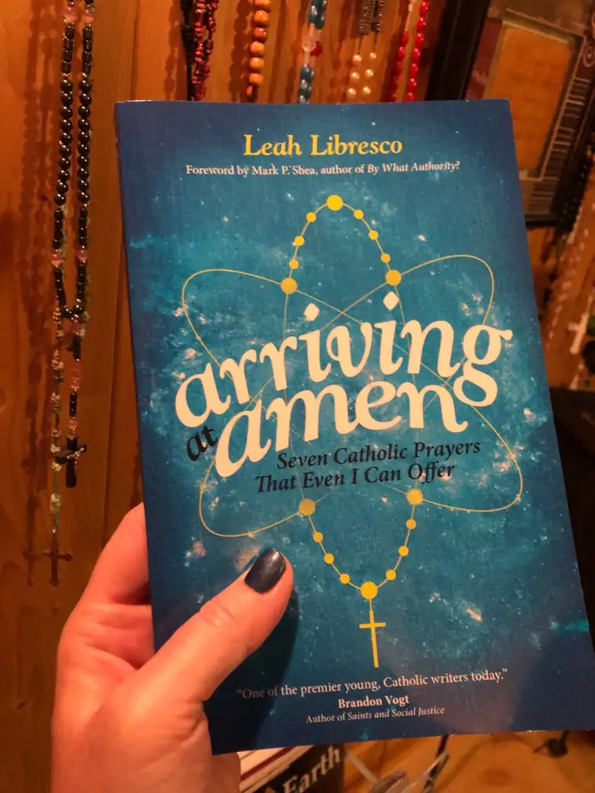
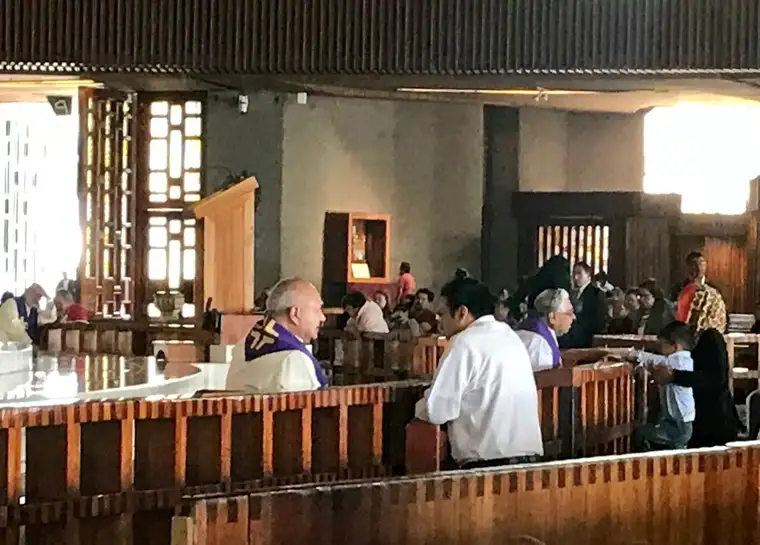

The Catholic Church is in the midst of a great turmoil, an unprecedented situation that seems to have no quick or painless resolve. As hard as it is to stay connected to all of this, I feel compelled to remain part of the ongoing conversation, to help heal what I can of the rifts that have arisen in my fold.
At the same time, surrounded as I am by this tension-filled conversation, I don’t want to lose sight of what makes my family so beautiful, and so worth staying near.
It would seem that now, of all times, would be the right time to leave, and yet there’s never been a thought of that. There is so much to keep me here. Despite everything, this is home, and as messy and mangled as it is, it’s also magnificent. The best of what the world can possibly offer, in my estimation, comes to us through the Church: Christ’s love, grace and redemption. For these, there’s no doubt; it’s worth staying.
I know not all feel this way, and those on the outside may well wonder: but why not just leave? Whether the question is from within or without, I feel compelled to answer it. Maybe it’s as much for myself as anything — to just say the words and hold them up to the light. And so, I’m going to do my level best to answer, over a period of time, as I feel inspired, the question of why I’m still Catholic, despite everything. I expect this will be less a defense and more an exercise for posterity, that I might leave a personal testimony of what is beautiful, true and good about my family the Catholic Church, from my own experience as well as others who have inspired me.

This first of my “Why I’m still Catholic” entries was inspired by a book I’m currently reading, “Arriving at Amen,” by Catholic convert from atheism Leah Libresco. Calling Confession “an oddly private grace,” she says she finds this sacrament often overlooked and undervalued, yet her favorite. Its practical effects alone are unparalleled: “Just knowing I will be going to confession helps teach me what my sins are.”Sometimes it takes a convert to help us see, to enable us to step outside our long-lived experience and examine the gifts we’ve been given.
Leah’s initial experiences of Confession, otherwise known as Reconciliation, were so different from my own — much more thought through. In my early formation, growing up in the aftermath of Vatican II, “Reconciliation” was a new word to describe Confession, and face to face Reconciliation, also new. And it seems that in these larger transitions, I missed something central about this sacrament. I didn’t understand its power, nor purpose. The sacrament was not emphasized in our home growing up — a reality that would take a side explanation to unravel — so it never had a chance to become a habit, or something I’d miss by not practicing it. This was coupled with an inadequate understanding of the Eucharist, and our need to be in a state of grace to most fully benefit from it. Then, in college, some of my non-Catholic friends planted additional question marks in my mind. Why not just confess our sins to God himself, wherever we are? Why go through a priest? Wasn’t that practice just antiquated and unnecessary?
Their logic made sense, at least on the surface. On a deeper level, however, I really believe now that it was easy to dismiss what I didn’t really understand because I just didn’t care to confront my sins. Doing so could be — maybe even should be — a rather messy, ugly ordeal, and in addition to seeming superfluous, it was a whole lot of trouble I didn’t want to put myself through.
Not only did I not understand the grace I was denying myself, I didn’t understand the role of the priest in all of it: “God with skin,” as his role was later explained. I didn’t realize he was not the one responsible for forgiving me, but a mere, yet important, vessel, standing in the place of Christ. Only later would I know it, and be grateful for it.
Indeed, I’m red-faced in admitting how delayed I was to see it all clearly. By the time I finally could wrap my brain around the importance of Confession, I was in the midst of raising our five young children and couldn’t figure out a way to get to the confessional on a regular basis without a major and exasperating production. I had no models at the time to light the way, and so I conceded, and just went to the seasonal communal offerings. It wasn’t until a bit later, when I started meeting with a spiritual director on a regular basis — and he, being a priest, offered Confession at the end of our sessions — that I came to practice this sacrament regularly, and, in doing so, finally came to see, as Leah has, the great gift of it.

I once heard a recovered alcoholic, sharing publicly what his experience had been, describe the cycle of shame inherent with addiction. You drink to numb emotional pain and other wounds, then you feel badly for being weak, so you drink more to try to escape the feelings of shame, repeating this over and over again in a pattern of erosion and ultimate destruction.
What the alcoholic doesn’t realize is that in covering up and avoiding, he’s moving around but not moving through. It is easier to just take the drink and forget about it all. What he doesn’t see is, if he were to face the pain somehow, and slowly move through it, he would find freedom on the other side, and leave the bondage of addiction behind.
It’s easier said than done, I know, but there is something analogous here to the person with sin on her shoulders avoiding the confessional. It’s not a perfect comparison. But like the addicted person not understanding that moving through his or her pain will free her, the sinner who is a reluctant penitent fails to understand the grace awaiting on the other side of facing one’s sin, and how receiving it can transform.
“Confession’s quiet, secluded grace strengthens me to seek out all other graces,” Leah says, revealing that Confession is just the first opening that leads to many more doors of freedom.
I wish we could get beyond the whole, “Why not just confess to God alone?” and other stumbling blocks that hold us back from approaching this particular throne of grace. In walking toward it, instead of away from it, I’ve become a better version of myself, and find it less intimidating each time. In fact, the fear I used to feel has been replaced by a desire for the effect of lightness that follows a good (honest) Confession. I wish this for others.
For those who believe dwelling on our sins in this way can be a negative, Leah explains, so beautifully: “My regret is a gift; it helps direct me away from sin and toward the healing promised in the sacraments, including the one I am about to receive.”

Saying her sins out loud, in front of a living human being (who, again, is there in the stead of Christ, but not the one forgiving) had an effect she came to appreciate. “Confession is the moment when I finally stop ignoring or muting the signals that God’s grace has been sending me…I can only seek healing for the wounds I’ve caused if I’m willing to look at them.”
Confession is stopping to acknowledge our sins, then voicing them to another, one equipped to let them pass through himself to Christ. In denying ourselves this inward examination, we miss a chance to grow closer to God, to be healed, and ultimately, to be more and more as Christ to others.
There’s more to say about this grace, this gift. For now, let me just say that like Leah, rather than dreading Confession or being suspicious of it, I’ve found it to be a remedy, a needed prescription for a persistent ailment. If I go too long without tending to this affliction, and doing what I can, with God’s help, to clean it up and treat it, I will remain uncomfortable, and my own healing — and thus the healing I can bring others — will be much less efficacious and complete.
The sacrament of Confession, which is meant to reconcile us with God, is an under-touted, underappreciated practice that I believe our world needs more and more, as sin becomes more egregious and pervasive. We are desperate for this great remedy and we don’t even know it.
And that’s just one of the reasons why I’m still Catholic. Thank you, Jesus.
Q4U: If you’re Catholic, what are your thoughts, good or bad, about Confession. If you’re not Catholic, what questions do you have about Confession as a lived reality?